Converting an old gas motorcycle to be an EV.
My role: Mechanical Team Lead

ReVOLT is a technical club at the University of Calgary that was created in 2024. This club focuses on converting gas-powered vehicles to electric. For our first project, which is still in progress, we chose to focus on converting a gas motorcycle.
Initial Stages
Since this was the first time many of us were doing a project like this, we had no idea where to start, so there was a lot of learning involved. To begin with, a few important components were modelled on Onshape, such as the battery cells and the frame of the motorcycle. When I joined in the club's early stages as just simply a mechanical team I modelled the motor controller based on the manufacturer's technical drawing and a simple motor mounting plate. The drawing of the plate is not meant for manufacturing, and was only made to detail some dimensions.
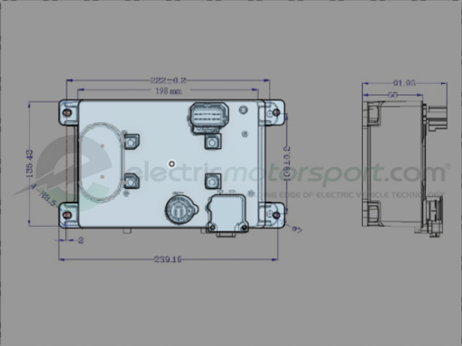 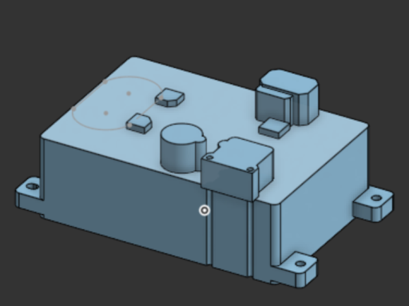 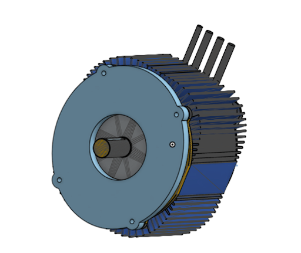 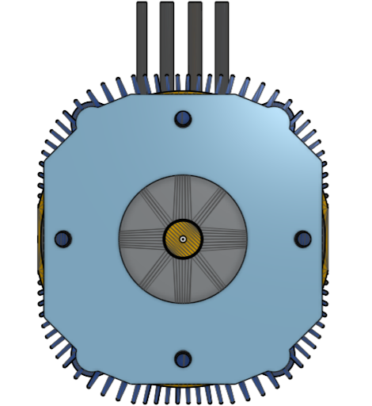 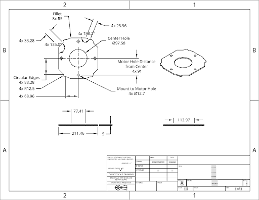 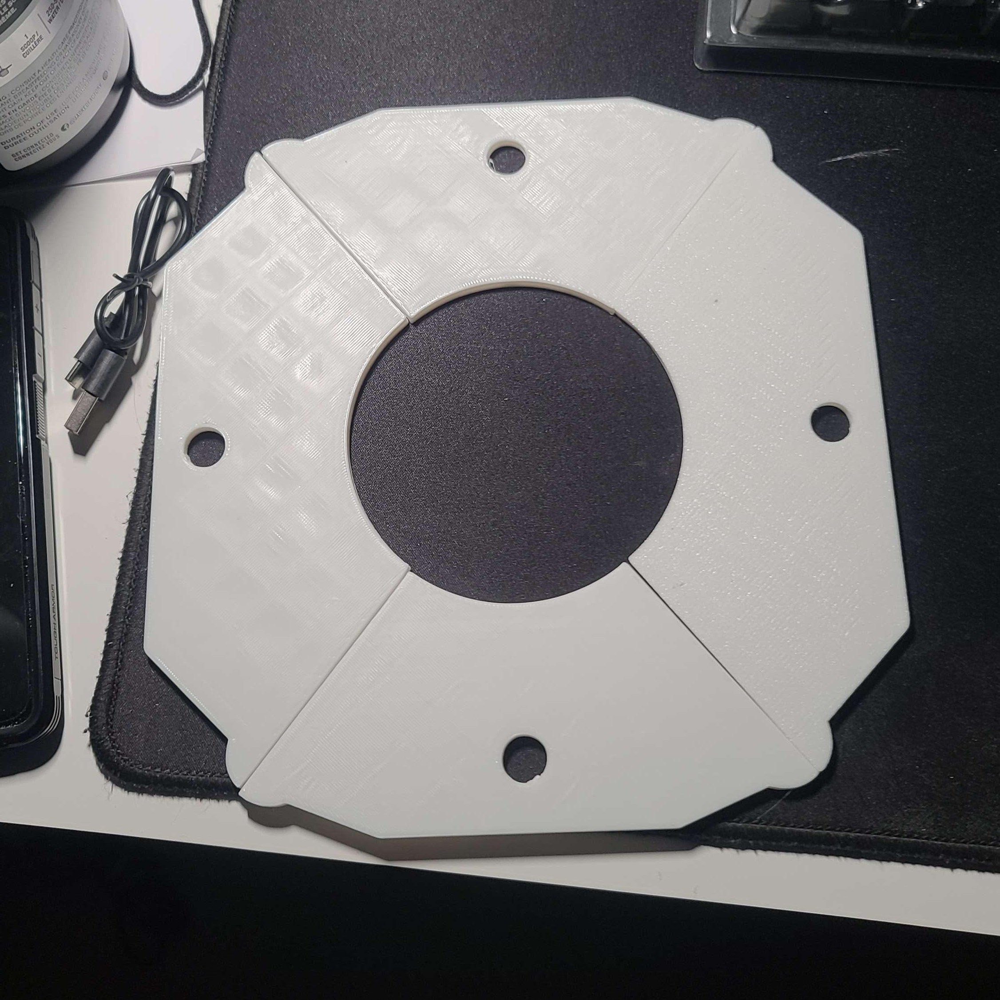For the frame of the Honda CBR-125R, the team took measurements of the motorcycle frame. These measurements, and some rough estimation of the shaping, were used to model the motorcycle frame. I was not able to model much initially due to being busy, so another teammate modelled the main frame of this motorcycle. I creaated simple models for the front fork and assisted and guided my teammates with the CAD for the remaining components of the frame (the rear seat and the handlebars).
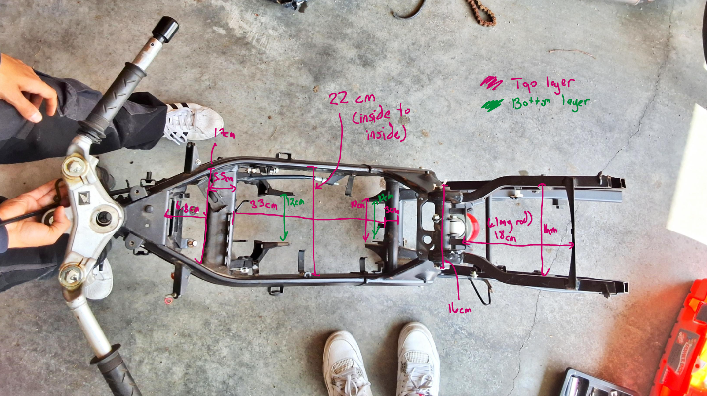 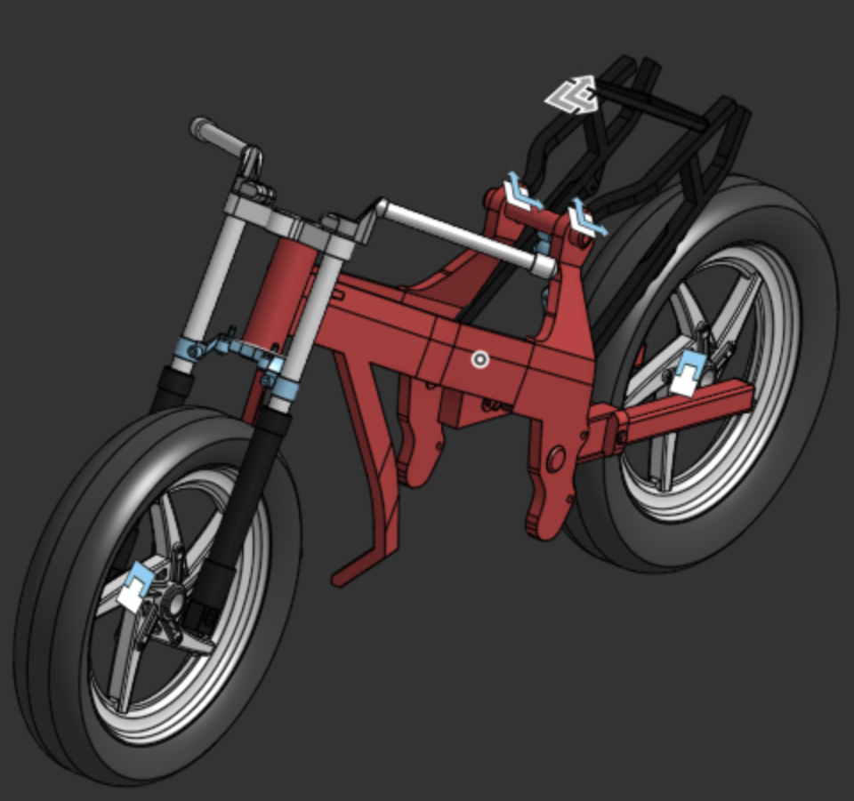However, after placing the motor and test battery pack in the frame to check for spacing and some thinking about the sizing, it became clear that the 125cc frame was too small for a conversion. Thus, the team had to redesign with a new frame. The team chose a 900cc frame, as it would be much larger and provide more optimal spacing. Looking for deals locally, a Kawasaki Ninja ZX-9R from 1998 was bought.

 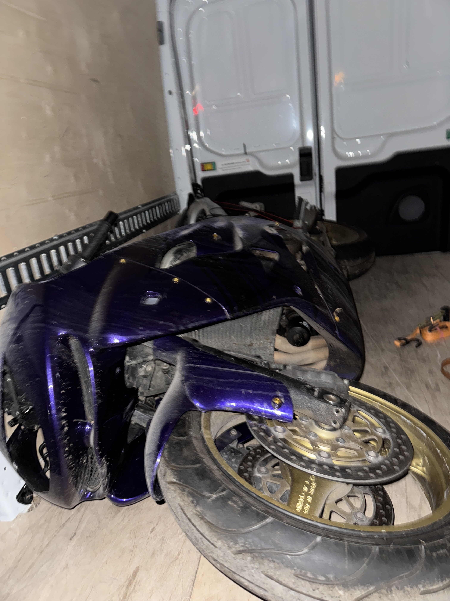
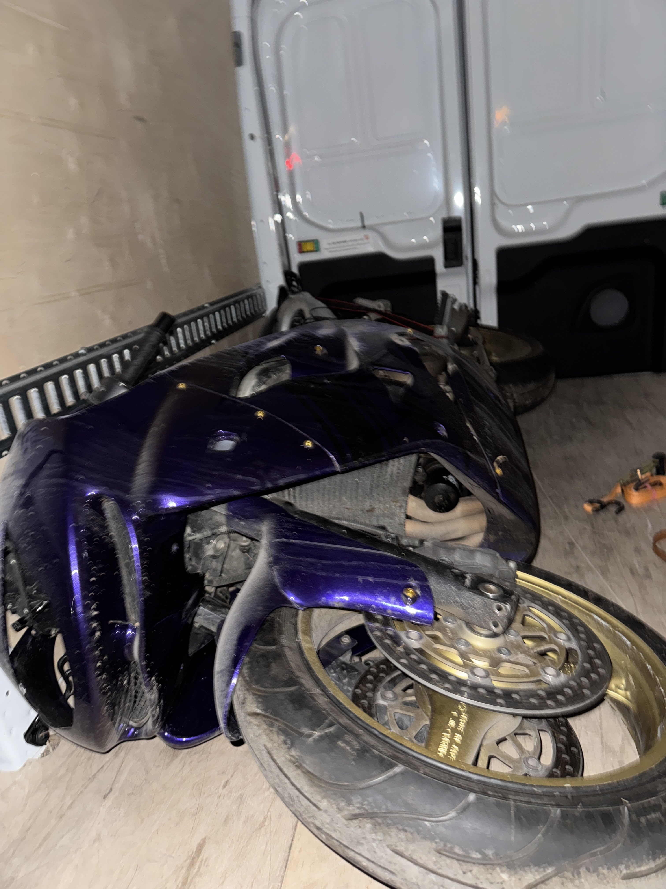
New Motorcycle Frame
Due to having a new frame, most of the designs had to be remade, and the new frame had to be modelled. The mechanical team had to start essentially from scratch with regards to design. At the same time, thermal analysis of the electrical components had to be completed. Thus, with the help of the directors of the club, I organized the mechanical team to perform different tasks. Two of my teammates focused on learning Ansys Fluent to perform the CFD analysis of the test battery pack and the motor. Two members were tasked with a sprocket design to connect the shaft of the motor to the rear wheel with a chain. Everyone else was tasked with design and CAD. This included remodelling the frame, creating a mounting/enclosure designs for the electronic components, and designing the body of the frame with insights from another CFD aero analysis.
Frame CAD
For the CAD of the frame, the team first attempted to get a scan of the motorcycle to save time. However, the scan was not very easy to use and was composed of surface bodies instead of solid bodies. It would not be able to be used for FEA analysis properly. Thus, the team decided to create a model of the frame from scratch, which is what I focused on. Using measurements taken with my team, many pictures used as guidelines for sketching on SolidWorks, assumptions regarding the shape, and a lot of patience, a rough design for the CAD of the frame's main body was created. I also documented my progress with some tips on a Notion page, making it easier for others to understand the process behind modelling. In one of the images below, my teammate modelled the rear wheel connection. This part is shown in an assembly with the Kawasaki Frame CAD.
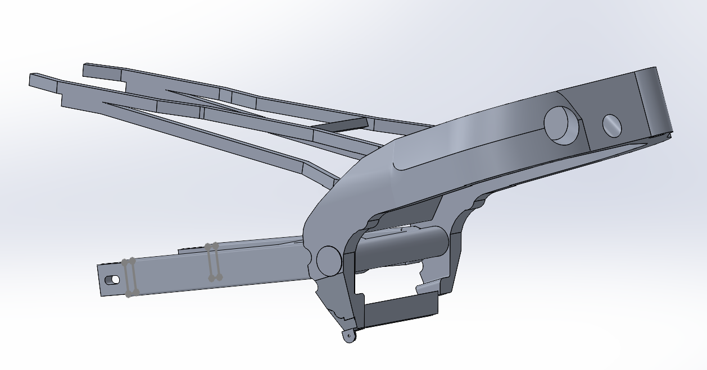 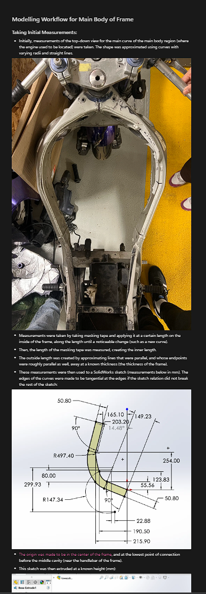 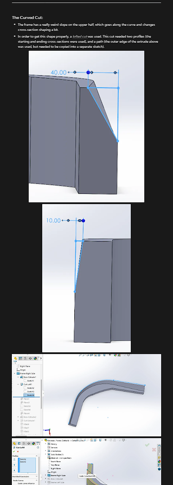 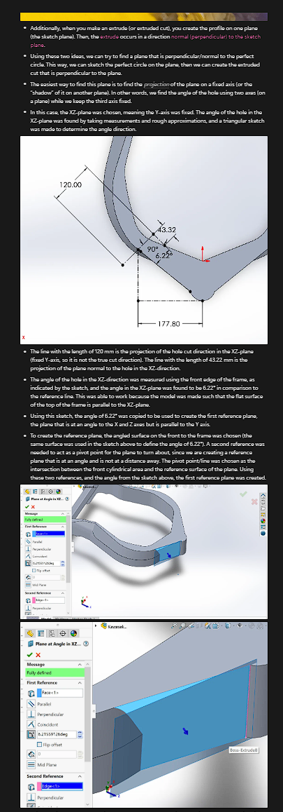 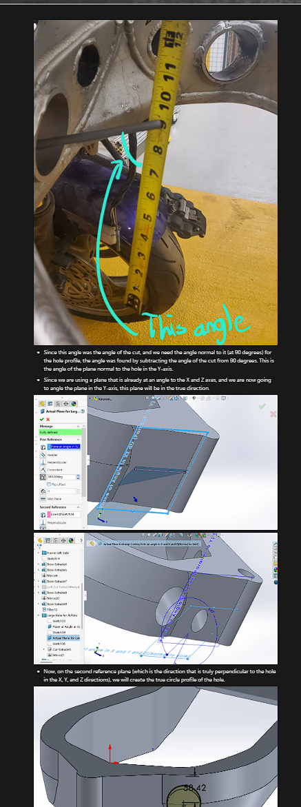 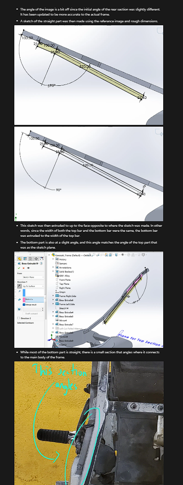Current Stages
This project is still in progress, and many of us have a lot to learn and complete. I am currently learning Ansys Fluent so that I can understand the process behind CFD which my other teammates are working on. The rest of the team is also documenting their progress on Notion to keep everything organized and to make it easier for newcomers to gain an understanding of the design process. Modelling for the rest of the motorcycle frame is in progress (such as the front fork and wheels), and the team is learning about manufacturing methods in advance to allow for the manufacturing process to go more smoothly.
Clicking on the images will just redirect you to this same page.